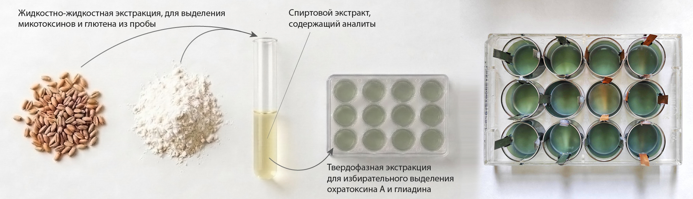

Тест-системы для одновременного определения низко- и высокомолекулярных соединений на основе нового химически стойкого полимерного материала
Тест-система на основе импринтированного полианилина с высокой селективностью к микотоксину охратоксину А и аллергену глютену, позволяющей одновременное определение этих аналитов в пищевых образцах. Тест-система предлагает два варианта анализа: электрохимический с использованием мультиметра (измеряется электрический потенциал) и колориметрический с хромогенной реакцией (измеряется оптическая плотность), что обеспечивает быстрый, чувствительный и экономичный контроль качества без сложного оборудования.
Материал отличается высокой стабильностью, возможностью многократного использования и устойчивостью к воздействию факторов окружающей среды, а уникальность продукта заключается в двойной селективности к двум важным маркерам безопасности, портативности и простоте применения, что выгодно отличает его от существующих методов, не позволяющих проводить анализы вне лабораторий.

Разработка актуальна для лабораторий, специализирующихся на сертификации безглютеновой продукции и на контроле качества зерна, муки, хлебобулочных изделий, а также для производителей безглютеновой продукции.